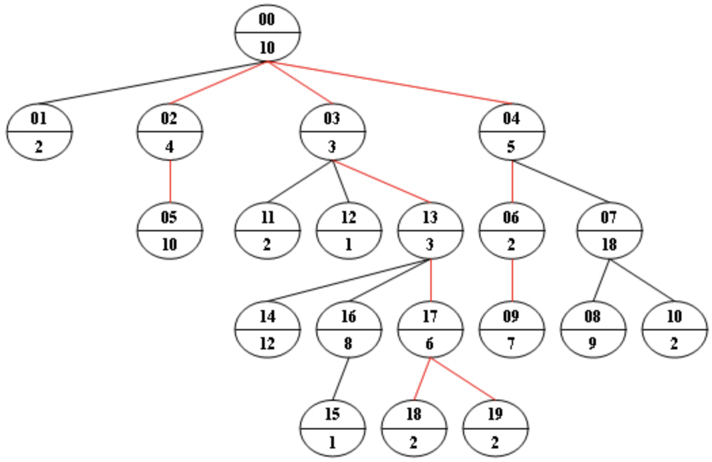

前言
自从上次三月份的PAT失利以来，到现在一直在断断续续为九月份的PAT备战，但是离考试还有一个月，我却还有一百多道题还没刷完，每周自己记录的笔记也没有坚持下来。
为了在接下来的一个月里进一步提升自己解决问题的能力，之后我将把我每次解答PAT甲级的代码以及相应的反思整合成博客，包括之前已经完成的在内，发布在我的个人博客上，希望通过这种方式强迫自己多写代码，随时保持编程的手感。
题目原文
Given a non-empty tree with root R, and with weight Wi assigned to each tree node Ti. The weight of a path from R to L is defined to be the sum of the weights of all the nodes along the path from R to any leaf node L.
Now given any weighted tree, you are supposed to find all the paths with their weights equal to a given number. For example, let’s consider the tree showed in the following figure: for each node, the upper number is the node ID which is a two-digit number, and the lower number is the weight of that node. Suppose that the given number is 24, then there exists 4 different paths which have the same given weight: {10 5 2 7}, {10 4 10}, {10 3 3 6 2} and {10 3 3 6 2}, which correspond to the red edges in the figure.

Input Specification:
Each input file contains one test case. Each case starts with a line containing 0 < N ≤ 100, the number of nodes in a tree, M (<N), the number of non-leaf nodes, and 0 < S < 2^30, the given weight number. The next line contains N positive numbers where Wi (<1000) corresponds to the tree node Ti. Then M lines follow, each in the format:
ID K ID1 ID2 … IDK
where ID is a two-digit number representing a given non-leaf node, K is the number of its children, followed by a sequence of two-digit ID’s of its children. For the sake of simplicity, let us fix the root ID to be 00.
Output Specification:
For each test case, print all the paths with weight S in non-increasing order. Each path occupies a line with printed weights from the root to the leaf in order. All the numbers must be separated by a space with no extra space at the end of the line.
Note: sequence {A1, A2, ⋯, An} is said to be greater than sequence {B1, B2, ⋯, Bm} if there exists 1 ≤ k < min{n, m} such that Ai = Bi for i=1,⋯,k, and Ak+1 > Bk+1.
Sample Input:
20 9 24
10 2 4 3 5 10 2 18 9 7 2 2 1 3 12 1 8 6 2 2
00 4 01 02 03 04
02 1 05
04 2 06 07
03 3 11 12 13
06 1 09
07 2 08 10
16 1 15
13 3 14 16 17
17 2 18 19
Sample Output:
10 5 2 7
10 4 10
10 3 3 6 2
10 3 3 6 2
我的解决思路
算法上，计算树中路径的长度，自然就想到了深度优先搜索（DFS）。题目的要求是，从根结点出发，到达某个叶结点的总权重和要等于给定的某个值，然后按顺序输出这条路径上的权重，那么就在深度搜索的过程中记录到达当前时的权重和以及路径，然后和给定值比较，第一：如果权重和小于给定值，就递归继续向下一层遍历，并传递到目前为止的权重和给下一层；如第二：如果权重和等于给定值，再判断当前结点是否是叶结点，如果是就说明是符合题目要求的路径，根据记录的路径输出，如果不是，就结束向下遍历；第三如果大于，说明这条路径上没有符合要求的结果，停止遍历。
数据结构上，我开始是用二维矩阵存储布尔值来模拟一个树，如果第一维编号是第二维编号的父亲结点，就设置为true，如果不是就是false（初始化的时候用fill函数默认初始化为false）。另外用一个一维整型数组单独存储每个编号结点的权重。
但是后来我发现题目有一个要求要实现起来就有点麻烦了。题目要求一旦符合给定值权重和的路径不唯一，就按照先出现的权重大的那一条路径优先来输出，而不能按随机找到的顺序输出。
这里我想了一个办法，用vector数组来存储树，这样在输入每个结点的子结点的时候对他们按照权重进行排序，那么深度优先遍历的过程中就会优先遍历那些权重更大的结点，这样自然输出的顺序就符合题目要求。
最后我按照设想写好了代码，并运行。
However……
case2始终没办法通过，网上查资料也没有人提到这个case为什么会在另外5个case全部正确的情况下给出 答案错误（也就是说既不是格式也不是内存，是算法上确实存在漏洞）
这里我觉得可以复习一下如何通过几个常见的case反馈结果来分析错误的类型。
答案正确 就是其字面意思。
编译错误 则一般是语法上出现错误，有时候也需要注意特性的兼容性。
格式错误 则一般是题目规定了输出格式，比如必须用空格隔开，结尾不允许有空格等。
运行超时 则是代码效率太低了，首先考虑自己的代码是否在算法层面效率低，比如有nlogn的解法但是自己为了简单用的n^2的解法，这种只能重新设计程序。如果算法自己想不出更好时间复杂度的解决方案，就尝试在数据结构和输入输出流上优化，比如是否可以用C的数组替代C++的容器或者不用自己构建类也能写出来，而存在大量输入输出的情况下，应该优先考虑用C的cstdio函数库的中函数。
答案错误 则一般是算法设计上存在问题，导致不能得到正确的结果。这个也要看情况，如果是全部case都是答案错误，那么就应该思考自己到底是来干嘛的；如果是一部分答案正确，一部分答案错误，那很有可能是题目给的数据有一些特殊的情况，比如和零有关的情况或者最大边界情况，像这个题目我最后有一个case答案错误就是因为没有考虑到如果只给出一个根结点而没有子结点的情况。
内存超限 出现比较少，除非题目明确限制了能使用的空间从而让你不能用常规的方法做，或者自己用了很复杂的面向对象结构。
段错误 则一般指内存越界的情况或者访问了没有定义的内存区域，这种时候要仔细检查一些访问数组的下标是否有超出的情况，尤其是在循环里。
以上是我做题的过程中常见的错误，其他的应该是从没见过。
回到本题，前面说了是因为没有考虑到只给出一个根结点的情况，因为我的输出是在DFS函数内输出的，而遍历从根结点的子结点开始遍历，而因为其没有子结点，一进去马上又出来了啥也没干，所以这个case就没法通过，而应该在这个跟结点权重等于给定值的情况下输出这个权重。
源代码
1 |
|
关于我写代码的格式，对于PAT，我已经有了一个固定的模版，每次写能省下不少（也不是很多）的时间，如下：
1 |
|
关于上述代码里我对只有一个根结点的处理很不优雅，但是在正式考试的时候还是先解决问题优先，以后工作了也是，能安全稳定地完成目标是要放在第一位的，而在有余力的同时再去考虑结构优化，因为每个人的能力都是有限的，不可能一开始就考虑得全面和尽善尽美，只能一步一步去完善自己。
后记
这个题目是30分级的，也就是甲级考试4道题的最后一题，我没有计时，但大概写代码一个半小时到两个小时左右，严重超时，应该限制在50分钟左右最好。因为数据结构选择的摇摆耽误了不少时间，后来因为一个case没办法通过又耽误了一个上午，所以总的来说是不尽人意的，后面还需要对每个题目严格计时，从而提高效率。